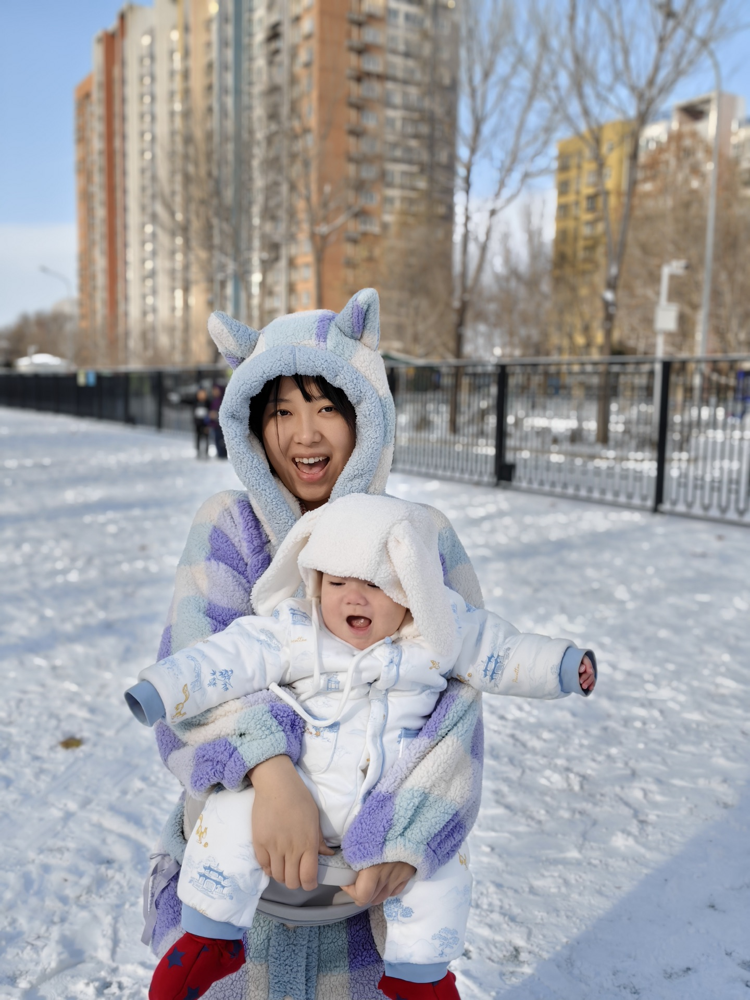
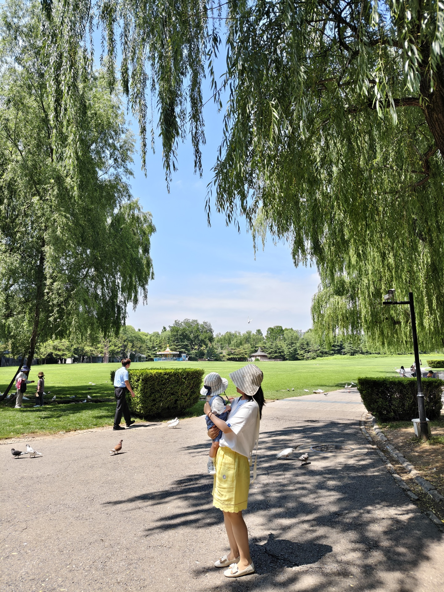
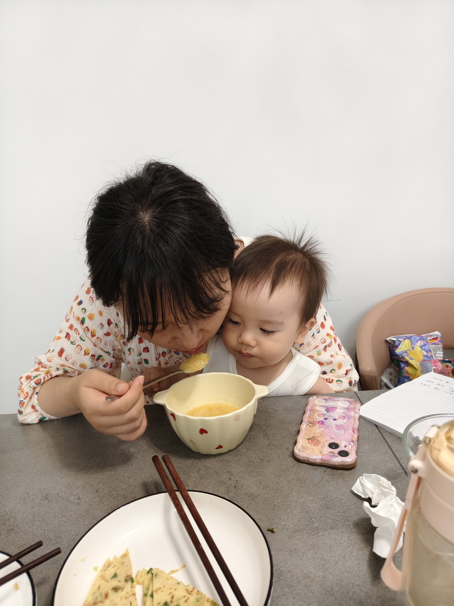
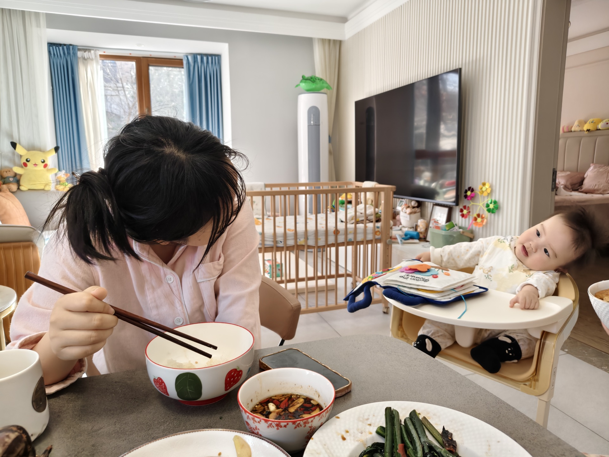
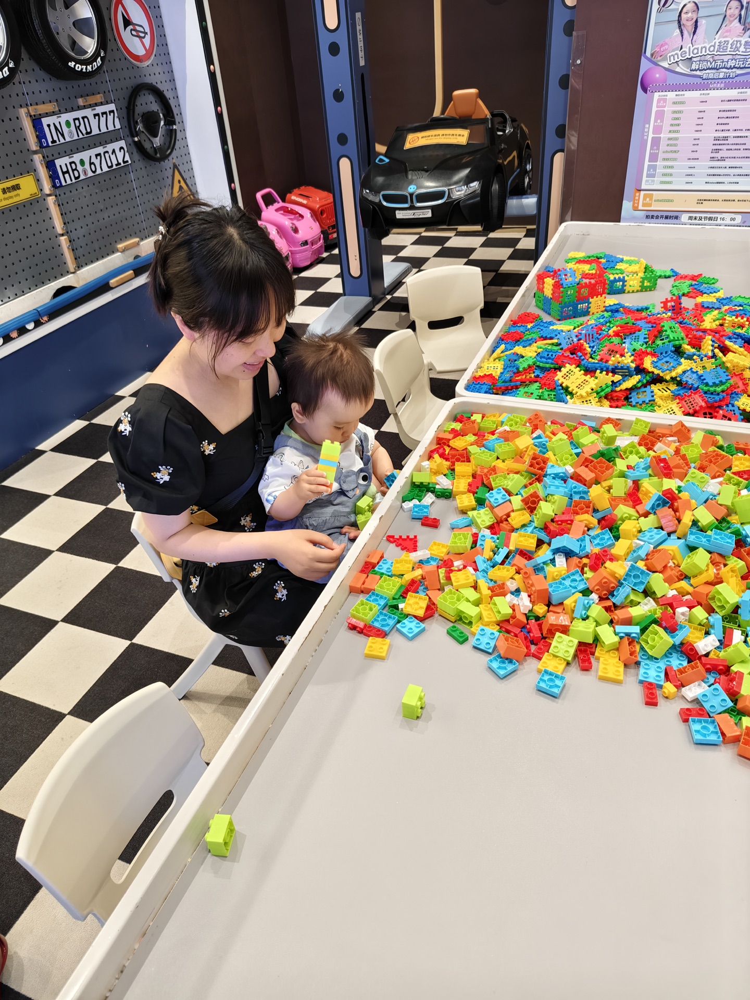
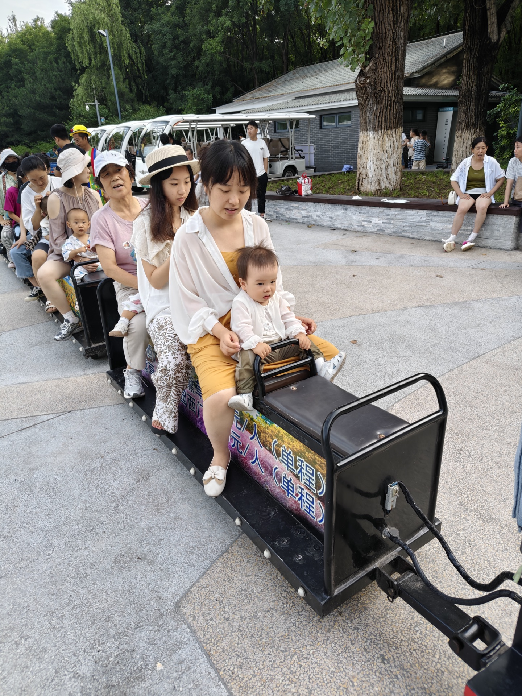
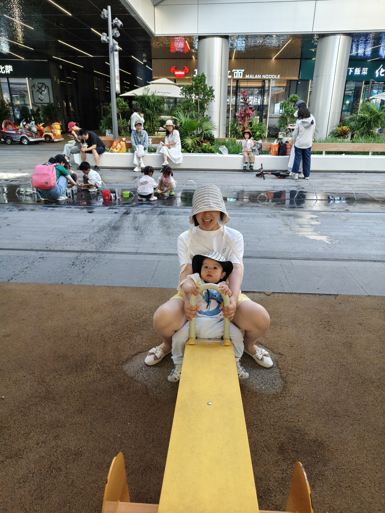
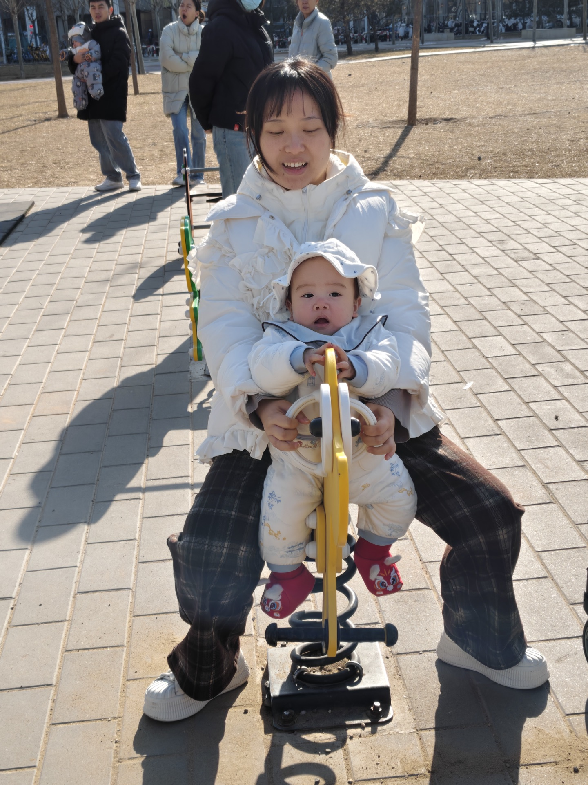
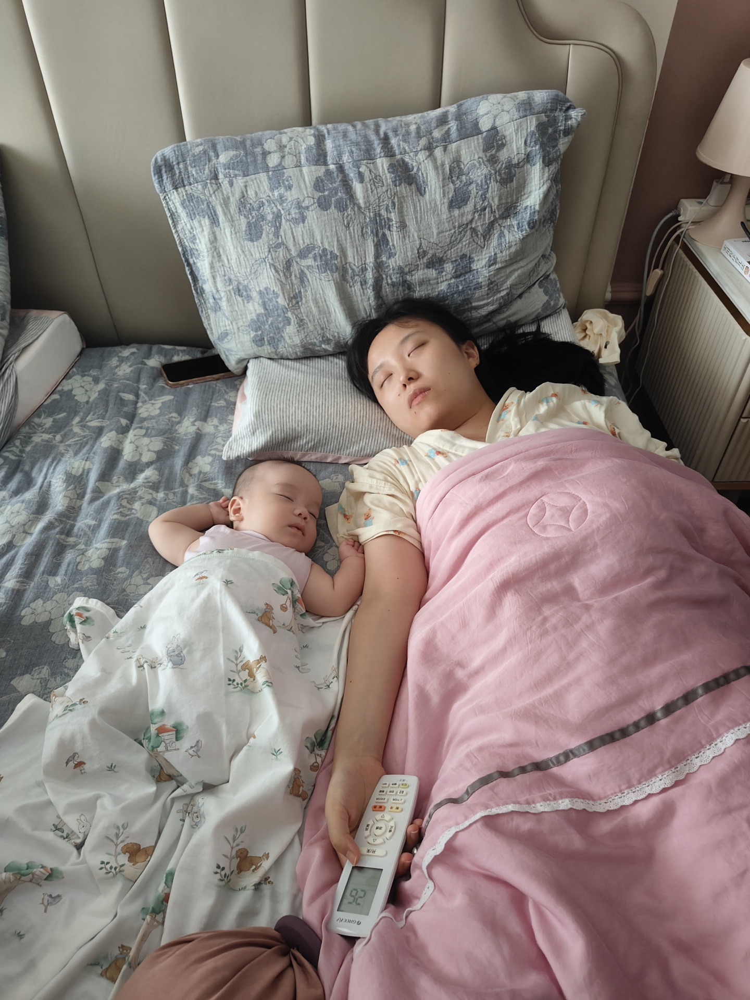

TO 老婆
我的镜头里，
是你们
我的余生里，也是你们。

01 / 我看见的风景
以前我以为，
爱情是两个人一起去看世界。
后来才发现，
你抱着他，而我看着你们，
就是我见过最好的风景。

02 / 一日三餐
爱后来藏进了一日三餐，
藏进你一勺一勺的耐心里。

03 / 家的模样
也藏在那些看起来普通，
却因为有你，
而格外安心的日子里。

04 / 陪伴
你陪他认识这个世界，
我也在你身上，
重新认识了温柔。

05 / 一起出发
从第一次出发，
到以后更远的远方，
谢谢你一直把他稳稳抱在怀里。

06 / 共同长大
他在慢慢长大，
我们也在磕磕绊绊地，
学着成为更好的爸爸妈妈。

07 / 春夏秋冬
照片里的他一直在变，
照片里的你，
却一直都在他身后。

08 / 也请好好休息
偶尔，你也会累得
和他一起睡着。
老婆，辛苦了。
写给你
在我眼里，
在我眼里，
你从来不只是妈妈。
你依然是我爱上的那个女孩，是会笑、会累、会期待，也值得被认真爱着的人。
我知道，成为妈妈以后，你的生活里多了奶瓶、辅食、积木、早起，和许多个来不及好好休息的夜晚。
关于余生
谢谢你和我一起，
把两个人的心动，
慢慢过成三个人的烟火。
镜头里的你们，由我记录；
镜头外的日子，我们一起走。
爱你的我
二〇二六年七夕
我的镜头里，是你们。
我的余生里，
也是你们。
七夕快乐，我的爱人。